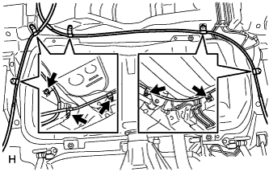
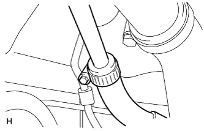
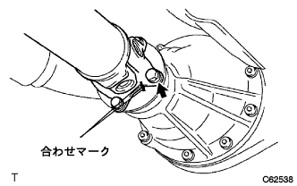

Fuel tank ASSY (1NZ-FE (4WD)) Installation |
| 1. Fuel cut -off valve assessed |
 |
Attach a new gasket to the fuel tank.
Apply light oil to the new fuel cut -off valve, insert it with care so that the gasket does not fall into the tank without applying unreasonable power.
Make sure that there is no gap between the lower end of the fuel cut off valve and the gap between the gasket, and that it is inserted.
| 2. Fuel tank cushion No.1 installation |
Attach the No. 1 fuel tank cushion.
| 3. Fuel tank ASSY installation |
 |
With 4 bolts, attach the fuel tank asser.
|  |
Attach the parking brake cable clamp.
| 4. Fuel cut -off valve Assisted (tube Tsuki) connection |
Combine the pipe and the connector axis and insert it until a "click" sound.
| 5. Fuel tank main tube connection |
Combine the pipe and the connector axis and insert it until a "click" sound.
| 6. Fuel tank Tsuifu Pipe Hose Connection |
 |
Connect the fuel tank Tsufira Pipe hose to the fuel tank.
| 7. Briza tube fuel hose No.1 connection |
|  |
Attach the No. 1 bleeder tube fuel hose to the clamp.
Connect the No. 1 bleeder tube fuel hose to the fuel tank.
| 8. Fuel tank protector No.1 installation |
 |
With four bolts, attach the dynamic dampa and the fuel tank protector No.1.
| 9. Proposhaft ASSY RR installation |
 |
Match the combined mark of the interimide shaft asshaft asser and propeller shaft ASSY RR.
|  |
Combine the combination of the propeller shaft Asy RR and the Differential flange.
Eight bolts, washer and eight nuts each attach the propeller shaft ASSY RR.
| 10. Exhaust pipe ASSY CTR installation |
Insert an exhaust center pipe ASSY into the exhaust pipe ASSY FR via a new gasket.
Install the exhaust center pipe ASSY with two exhaust pipe support.
 |
The new clamp and bolt are the positions of the clamp and tighten the bolt.
| 11. Fuel Senda Gauge ASSY installation |
With 5 screws, attach a fuel sender gauge.
| 12. Fuel suction tube Assessed Pump & Gauge Installation |
 |
Attach a fuel suction tube ASSY W/pump & gauge via a new gasket.
Connect the fuel hose paint mark to the part A in the figure, and set the knob of the clip to enter the range of the figure.
 |
Combine the fuel suction tube Assy W/Pump & gauge and the fuel tank vent tube set plate and attach it with eight bolts.
| 13. Fuel tank main tube connection |
Insert the main tube into the plug of the suction plate and attach the tube joint clip.
| 14. Rear floor service hall cover No.2 Installation |
 |
With four screws, attach the rear floor service hall cover No.2.
| 15. Lear floor service hall cover installation |
Attach the rear floor service hall cover with four screws.
| 16. Lear seat cushion assessed |
 |
Rena seat cushion assemble the hook at the rear of the rear seat.
Pass the rear seat belt through the rear seat cushion cover and pad back rubber band.
Rena seat cushion Assy The hook at the front of the front.
| 17. List of rear seat back Assisted |
 |
Attach the rear seat back associate with two bolts.
Attach two clips.
| 18. Battery minor Star Minal Installation |
| 19. Fuel leak inspection |
Confirm that there is no leak in the fuel system with the fuel pressure.
| 20. Exhaust gas leak inspection |
| 21. Initialization when removing battery terminal |
reference